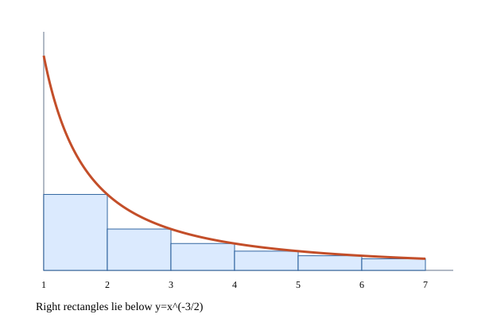

문제 요약
\(\sum_{n=2}^\infty n^{-3/2}<\int_1^\infty x^{-3/2}\,dx\) 직사각형 그림으로 부등식과 급수에 대한 결론을 설명하라.

힌트. 일반항과 부분합을 구별하고 등비급수·소거합·일반항의 영 수렴 조건을 살펴본다.
해설.
적분판정법은 수열의 항을 잇는 함수가 충분히 큰 입력에서 양수·연속·감소일 때 적용한다. 급수와 이상적분은 함께 수렴하거나 발산하지만 값 자체가 같은 것은 아니다. 나머지 오차는 \(\int_{N+1}^{\infty}f(x)dx\le R_N\le\int_N^{\infty}f(x)dx\)로 둘러싼다.
\(\int_{n-1}^n x^{-3/2}\,dx>n^{-3/2}\)
\(\int_1^\infty x^{-3/2}\,dx=[-2x^{-1/2}]_1^\infty=2\)
양의 부분합이 적분값으로 위에서 유계이다. 첫 직사각형에서 생긴 양의 넓이 차가 엄격한 부등식을 유지한다.
최종 답. \(\sum_{n=2}^\infty n^{-3/2}\text{ converges and is less than }2\)
검산·주의점. 초기항·정의역과 극한 논증의 조건을 확인했다.
Problem summary
\(\sum_{n=2}^\infty n^{-3/2}<\int_1^\infty x^{-3/2}\,dx\) Use rectangles to illustrate the inequality and conclude something about the series.
Hint. Distinguish terms from partial sums and examine geometric sums, telescoping, and the zero-term condition.
Solution.
The integral test requires an eventually positive, continuous, decreasing extension of the terms. The series and improper integral share convergence behavior, not generally the same value. The remainder satisfies \(\int_{N+1}^{\infty}f(x)dx\le R_N\le\int_N^{\infty}f(x)dx\).
\(\int_{n-1}^n x^{-3/2}\,dx>n^{-3/2}\)
\(\int_1^\infty x^{-3/2}\,dx=[-2x^{-1/2}]_1^\infty=2\)
Positive partial sums are bounded by the integral; the positive first-rectangle gap preserves strictness.
Final answer. \(\sum_{n=2}^\infty n^{-3/2}\text{ converges and is less than }2\)
Check and conditions. Initial terms, domain, and conditions of the limit argument were checked.